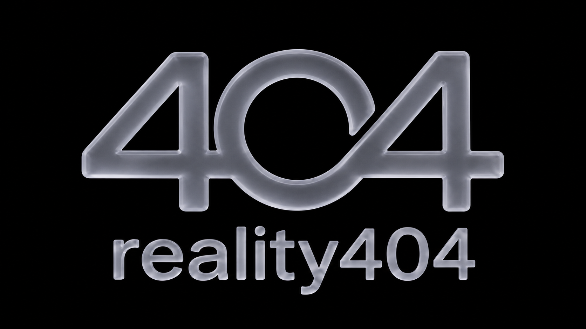

Componentes v2
Abre este fichero en el navegador. Cada demo es independiente; la guía de cada una está en su README.md. Para implementarlas, lee BRIEF_CLAUDE_CODE.md.
Sobre mí
AboutBadgeCredencial 404 colgante: arrástrala y se balancea; clic para darle la vueltaabrir sola ↗ · guíaAboutBentoBento de vidrio: foto con tilt, bio, hora local en A Coruña, contadores y stackabrir sola ↗ · guíaAboutTerminalTerminal reality404: escribe la bio sola y luego acepta comandosabrir sola ↗ · guíaContacto
ContactChatChat conversacional: el formulario se rellena pregunta a preguntaabrir sola ↗ · guíaContactGlassFormulario de vidrio líquido: el borde cromado sigue al cursor; envío con el 404 brillandoabrir sola ↗ · guíaContactTerminalTerminal 404: 'mensaje no encontrado… escríbelo tú' con prompts de consolaabrir sola ↗ · guíaDispositivo
DeviceFullscreenLa tablet/móvil se amplía a pantalla completa al abrir un proyecto (y vuelve con Esc)abrir sola ↗ · guíaProyectos
ProjectBentoBento grid: tilt 3D y brillo que siguen al ratón, el vídeo arranca al pasarabrir sola ↗ · guíaProjectCoverflowCoverflow 3D: arrastra, rueda o flechas; la central reproduce su vídeoabrir sola ↗ · guíaProjectDeckBaraja de vidrio: arrastra y lanza la tarjeta, clic para abrir en la tabletabrir sola ↗ · guíaTecnologías
TechMagnetCloudNube magnética: los iconos flotan y huyen (o se pegan) al cursor; arrastrablesabrir sola ↗ · guíaTechPhysicsBoxCaja con física: las fichas caen, se apilan, se cogen y se lanzanabrir sola ↗ · guíaTechStackTowerTorre apilable: derríbala con el ratón y se recompone solaabrir sola ↗ · guía